O co biega w
druku 3d?
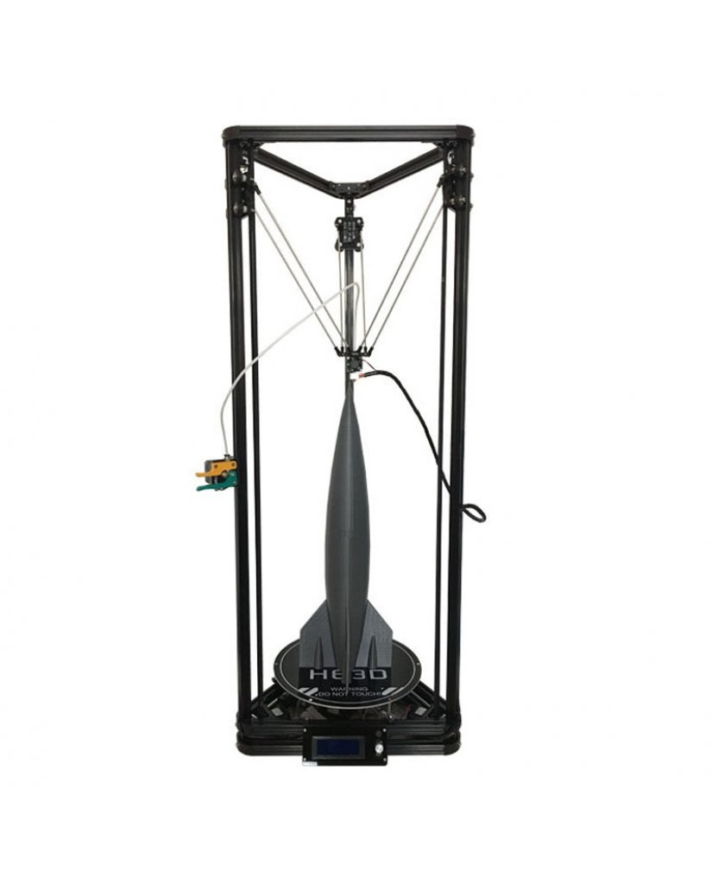
Karol Sokołowski
[Maker, SRE/DevOPS]
0xdeadbeef.io
Wysokie Mazowieckie, Maj 2019
:o mnie:
- Inżynier systemów informatycznych/bioinformatyki/cyber bezpieczeństwa
- Hobbysta elektronik/mechanik
Trochę historii druku 3d
- Wynaleziony w okresie 1981-1984 przez Dr. Hideo Kodama’s(Japonia), Alain Le Méhauté(Francja), Charles Hull (Stany, ojciec stereolitografii)
- Wszyscy oni dość niezależnie pracowali nad prototypami pierwszych urządzeń druku 3d
- Powstał koncept stereolitografii - czyli robienie przedmiotów warstwa po warstwie
Stereolitografia

Jedna z pierwszych drukarek 3d
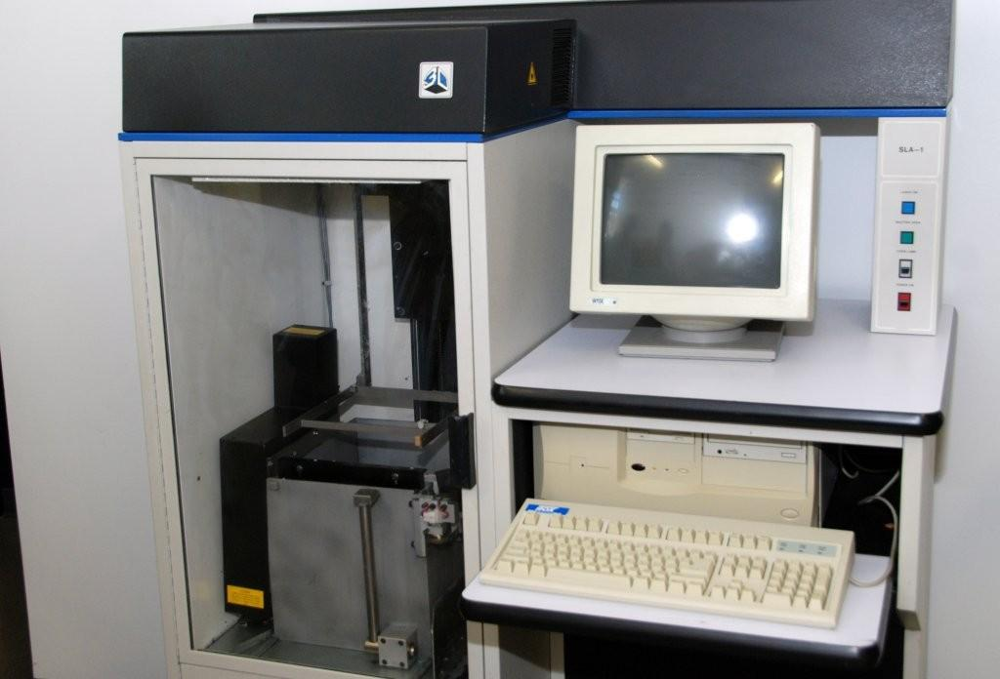Popularyzacja druku 3d
- Przez blisko 20 lat drukarki 3d były dość drogie, czyli niedostępne
- Potem NASA dostrzegła ich potencjał w lotach kosmicznych
- Prawdziwa rewolucja zaczęła się dopiero w latach 2000+
- I to dopiero środowisko open-source przyniosło duży spadek kosztów, około 5-7 lat temu (model Prusa)
Współczesne drukarki 3d
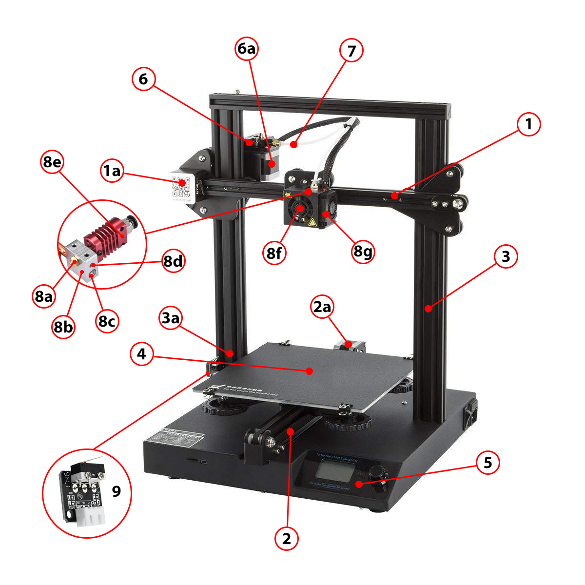Więc jak to wogóle działa ?
- Jest standardowy model żyłki materiału, o średnicy 1.75mm wchodzi do dyszy: 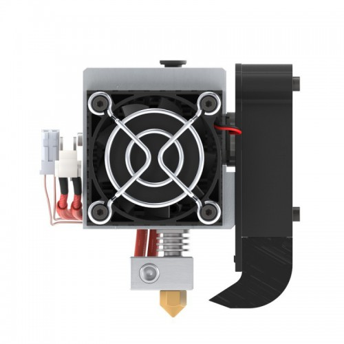 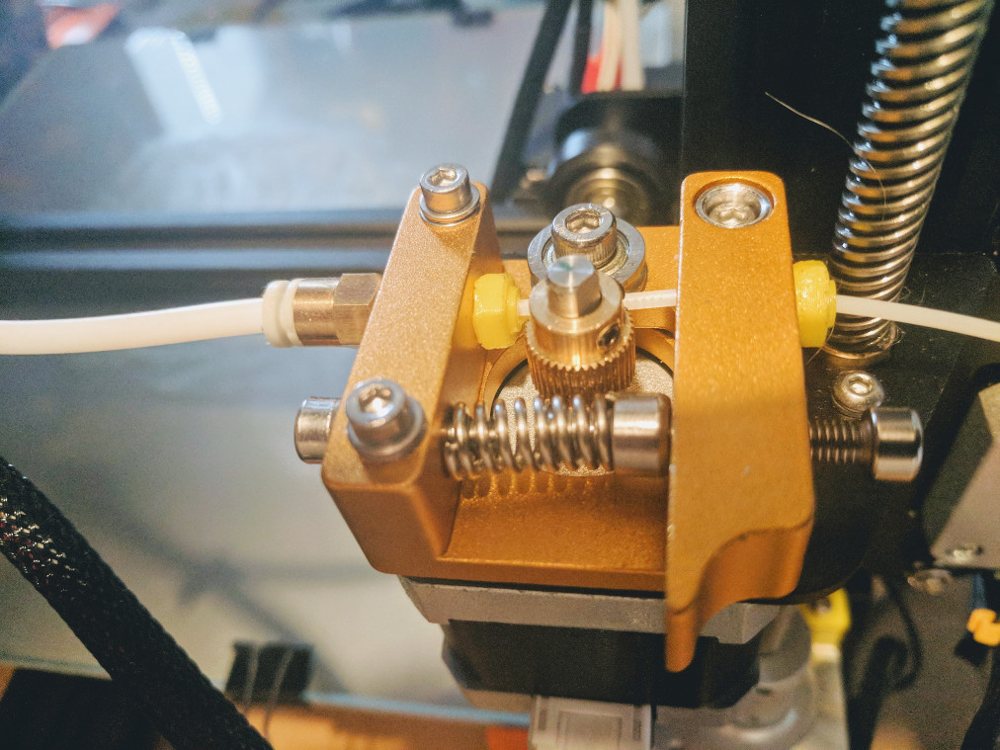 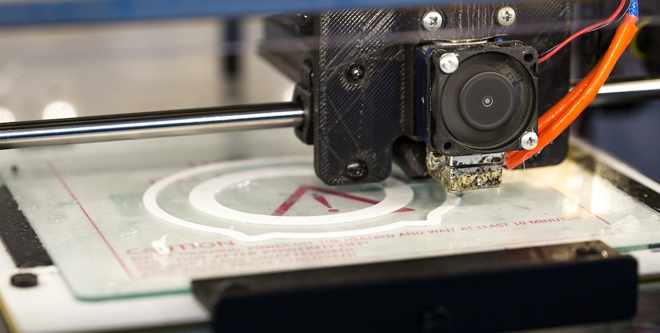
- i drukuje taką cienką nitką 0.4mm na stole.
- Proste nie?
No ale jak?
- Zaczynamy od pliku w formacie STL (z CADa) 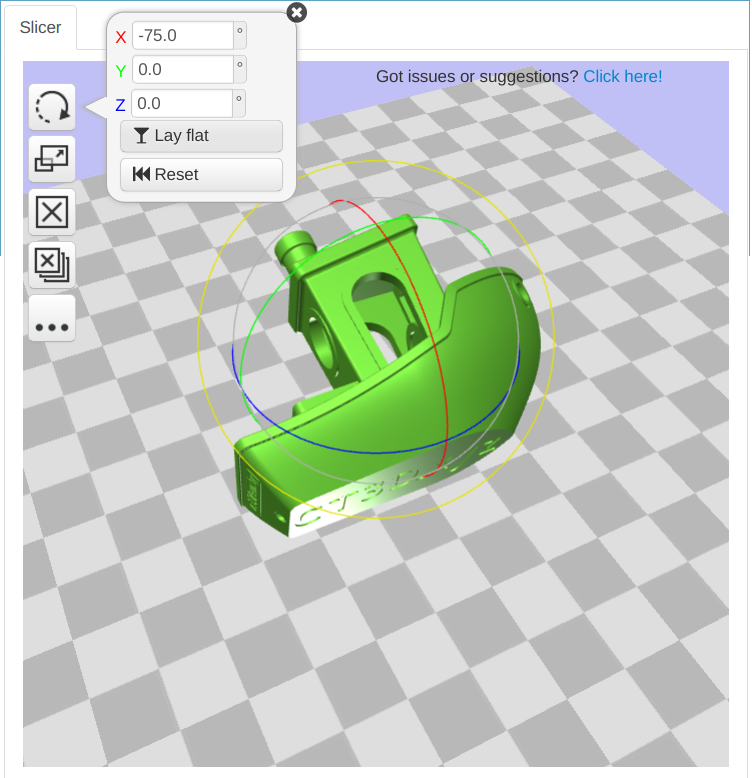 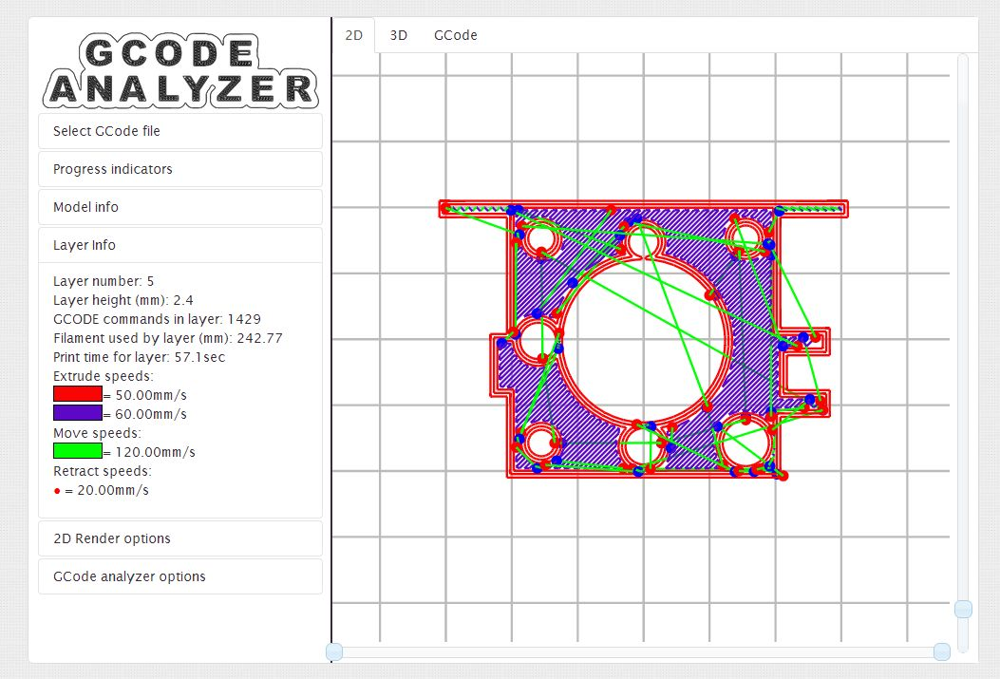
- Potem program slicer, tnie model na warstwy
- oraz Gcode jest wysyłany do drukarki, porusza jej elementami.
Gcode (kod geometryczny) - język drukarek i CNC
N## G## X## Y## Z## F## S## T## M##
- N## G## - numer linii + funkcja
- X## Y## Z## - koordynaty w przestrzeni
- X## Y## Z## - koordynaty w przestrzeni
- F## - prędkość materiału
- T## - wybór narzędzia
- M## - pozostałe funkcje, można samemu zdefiniować
Oprogramowanie które zazwyczaj siedzi w drukarce jest darmowe, nazywa się Marlin, i ono rozumie zawsze język Gcode.
Z czego się drukuje
- Plastik PLA - poliakrylamid, biodegradowalny, biokompatybilny (protezy) - 200-220 °C, stół 60 °C
- Plastik ABS - styren, nieekologiczny - 230-260 °C, stół 100 °C
- Plastik PETG - twardy, dość wytrzymały
- Nylon - super wytrzymały
- Guma TPU - poliuretan - obudowy telefonów, uszczelki - 250 °C, stół 100 °C
- Celuloza + PLA - poliakrylamid + drewno - wygląda jak drewno
- Nanorurki - Carbon Fiber - super wytrzymały
A co z drukowaniem metali?
-
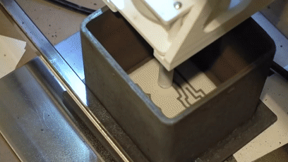
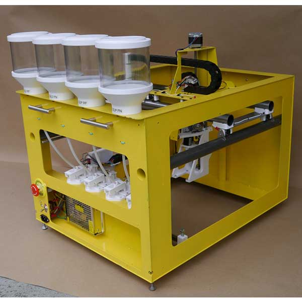
- Da się, ale temperatury zaczynają się 1200 °C
- Potrzeba do nich specjalnej drukarki, filament jest proszkiem, potem trzeba dalszej obróbki.
- Drukarki dużo potaniały, ale dalej to koszt >5000$
- Także metal najlepiej komuś zlecić.
Parametry wydruku
- Temperatury - stół + głowica/materiał
- Prędkość druku - 10-100mm/s
- Szybkość ruchu głowicy - 100-150mm/s
- Stopień wypełnienia przestrzeni litej - 20-25%
- Wzór wypełnienia przestrzeni litej - kratka, szesciokąt
- Struktury podpierające (support)- tak/nie
Struktury podpierające
-
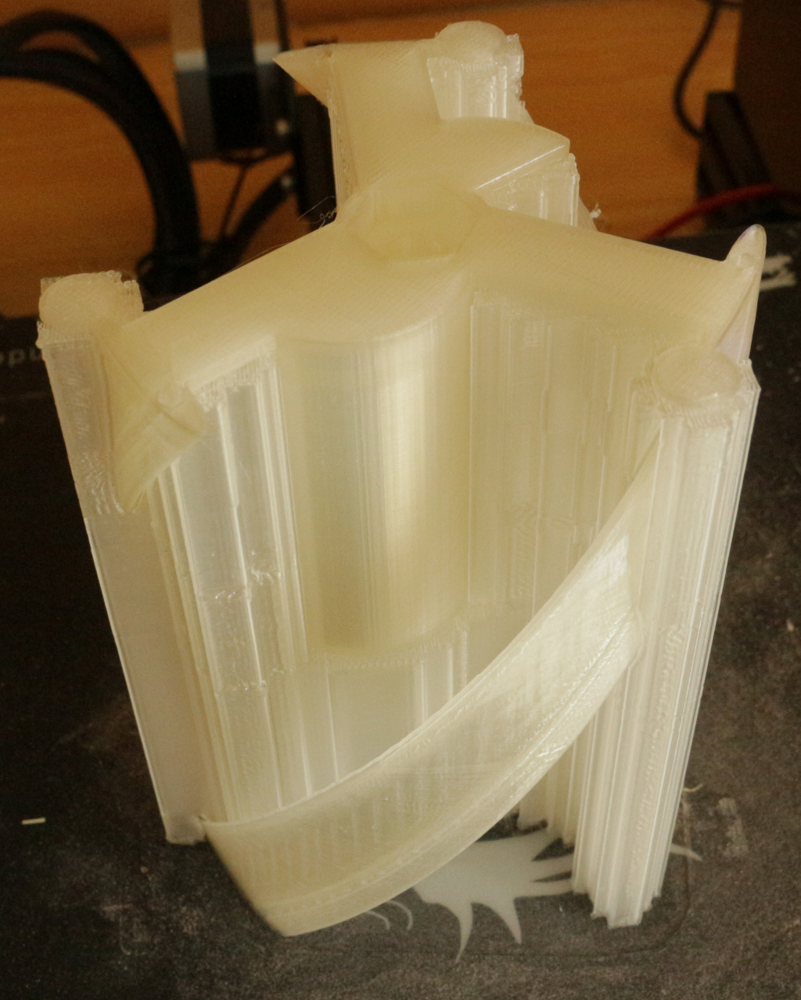
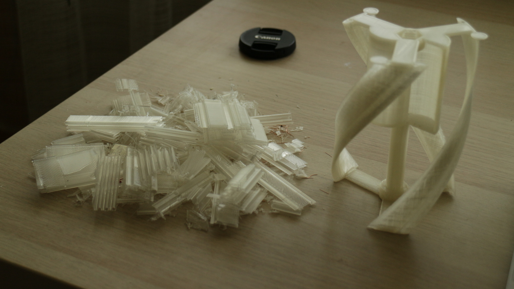
Wypełnienia
-
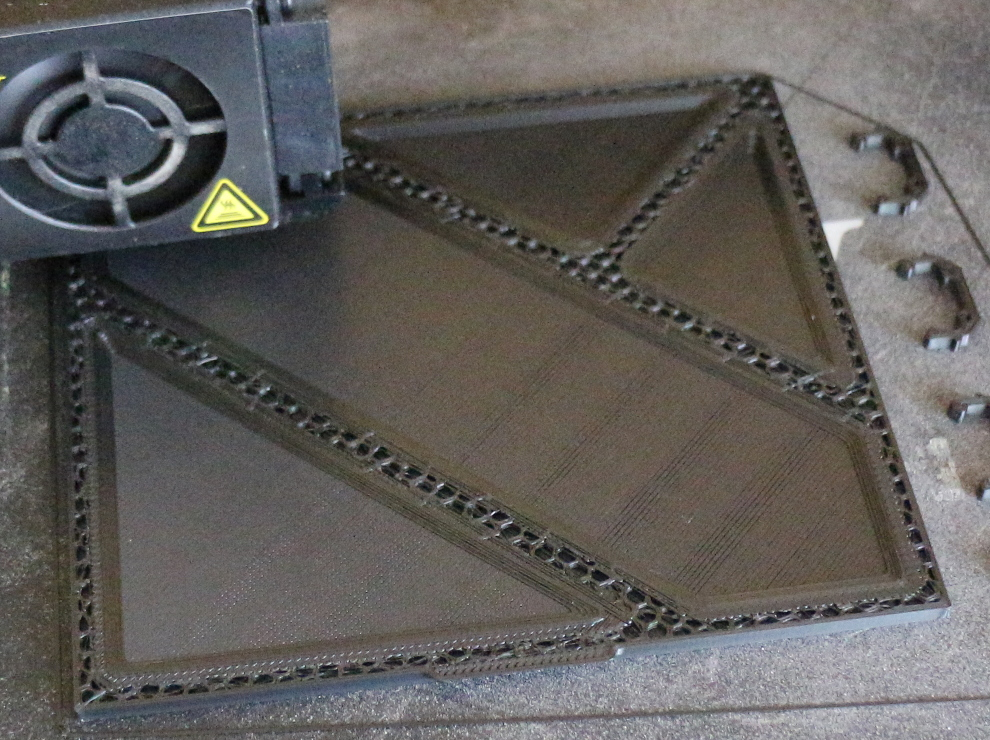
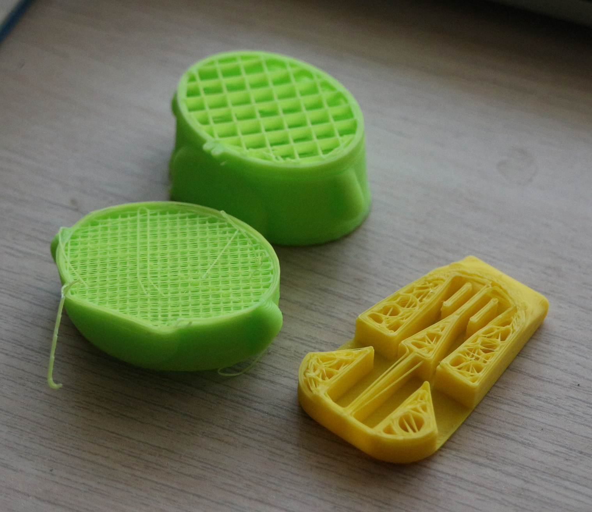
Co może pójść nie tak?
-
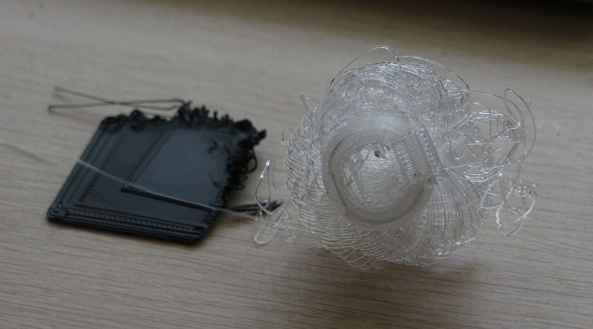
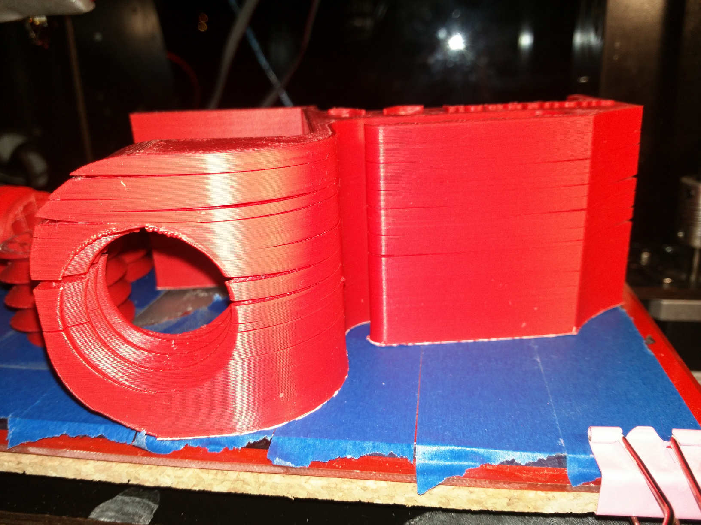
Oprogramowanie
-
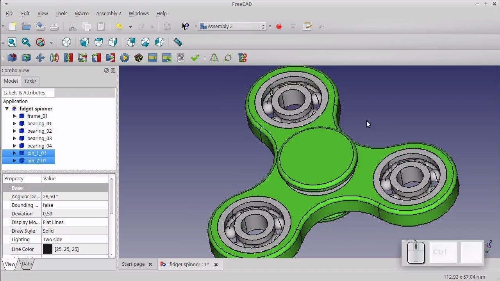
- FreeCAD + OpenSCAD
Akcja!

Akcja!
No ale po co?
- Zalety/wady druku 3d?
- Zalety/wady wtryskiwania?